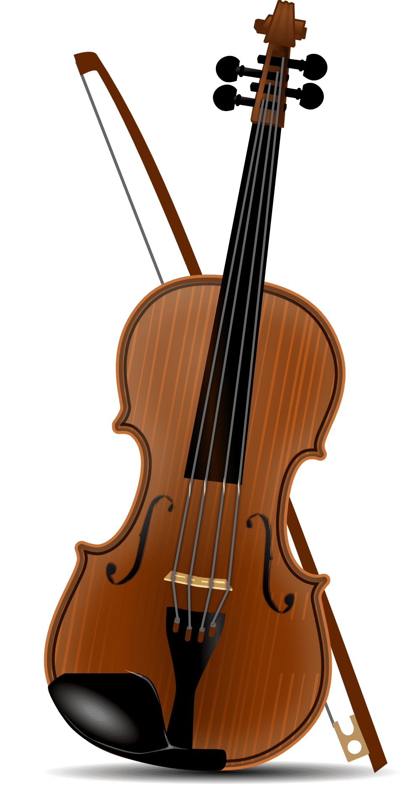

UMA HISTÓRIA DE CINCO MIL ANOS
A voz silenciosa dos instrumentos
Cada instrumento carrega séculos de civilização, cultura e emoção humana. Explore a origem, evolução e os segredos por trás dos grandes instrumentos clássicos.

Anos de historia documentada
instrumentos catalogados
Civilizações representadas